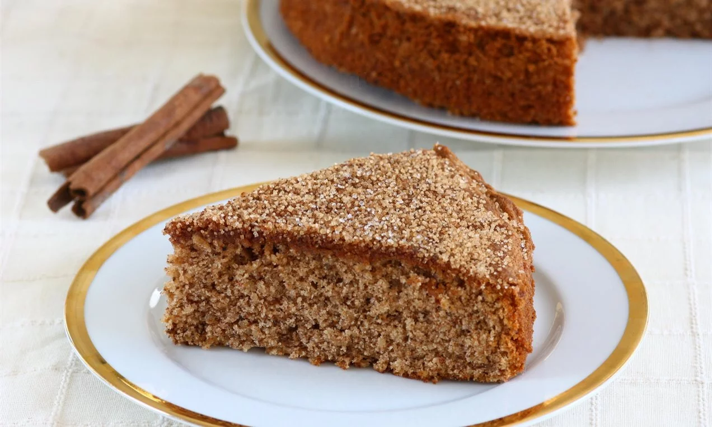

Elmalı Havuçlı Tarçınlı Kek
Kimsenin hayır diyemeyeceği tarçınlı kek şimdi biraz daha lezzetli.

Malzemeler
- 3 adet yumurta
- 1,5 su bardağı şeker
- 1 çay bardağı süt
- 1 çay bardağı yağ
- 2 su bardağı un
- 1 yemek kaşığı tarçın
- 1er adet elma ve havuç
- 1 paket kabartma tozu
Nasıl yapılır?
- Yumurta ile şeker iyice çırpılır. Süt, sıvı yağ eklenir ve karıştırılır.
- Tarçın, un, kabartma tozu, şekerli vanilin eklenir. Güzelce karıştırılır.
- Son olarak ceviz içi elma ve havuç eklenip karıştırılır. Ardından yağlanmış kaba dökülerek 180 derecelik fırında 40-55 dakika pişirilir. Çıkarıp soğuttuktan sonra dilimleyerek servis edin.